Maxwell's Bridge
Maxwell's Inductance Bridge
Maxwell's Inductance Capacitance Bridge
Advantages of Maxwell's Bridge
Disdvantages of Maxwell's Bridge
This bridge is used to find out the self inductor and the quality factor of the circuit. As it is based on the bridge method (i.e. works on the principle of null deflection method), it gives very accurate results. Maxwell bridge is an AC bridge so before going in further detail let us know more about the ac bridge.
AC Bridges
AC Bridges consist of a source, balance detector and four arms. In AC bridges, all the four arms consists of impedance. The AC bridges are formed by replacing the DC battery with an AC source and galvanometer by detector of Wheatstone bridge.They are highly useful to find out inductance, capacitance, storage factor, dissipation factor etc.
Now let us derive general expression for an AC bridge balance
Figure given below shows AC bridge network:
AC Bridge
Here Z1, Z2, Z3 and Z4 are the arms of the bridge.
Now at the balance condition, the potential difference between b and d must be zero. From this, when the voltage drop from from a to d equals to drop from a to b both in magnitude and phase.
Thus, we have from figure e1 = e2
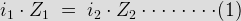
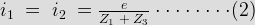
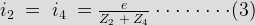
From equation 1, 2 and 3 we have Z1.Z4 = Z2.Z3 and when impedance are replaced by admittance, we have Y1.Y4 = Y2.Y3.
Now consider the basic form of an AC bridge. Suppose we have bridge circuit as shown below,
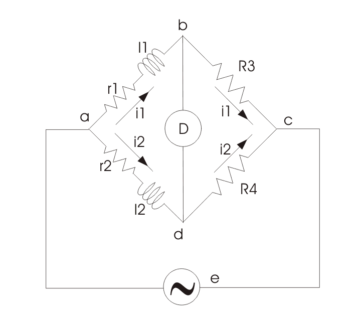
In this circuit R3 and R4 are pure electrical resistances. Putting the value of Z1, Z2, Z3 and Z4 in the equation that we have derived above for AC bridge.
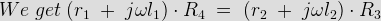
Now equating the real and imaginary parts we get
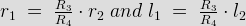
Following are the important conclusions that can be drawn from the above equations:
(a) We get two balanced equations that are obtained by equating real and imaginary parts this means that for an ac bridge both the relation (i.e.magnitude and phase) must be satisfied at the same time. Both the equations are said to be independent if and only if both equation contain single variable element. This variable can be inductor or resistor.
(b) The above equations are independent of frequency that means we do not require exact frequency of the source voltage and also the applied source voltage waveform need not to be perfectly sinusoidal.
Maxwell's Bridge
Under this we going to study about the following
(a) Maxwell's inductor bridge
(b) Maxwell's inductor capacitance bridge
Maxwell's Inductance Bridge
Let us now discuss Maxwell's inductor bridge. The figure shows the circuit diagram of Maxwell's inductor bridge.
Maxwell Induction Bridge
In this bridge the arms bc and cd are purely resistive while the phase balance depends on the arms ab and ad.
Here l1 = unknown inductor of r1.
l2 = variable inductor of resistance R2.
r2 = variable electrical resistance.
As we have discussed in ac bridge according to balance condition, we have at balance point
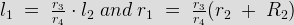
We can vary R3 and R4 from 10 ohms to 10,000 ohms with the help of resistance box.
Maxwell's Inductance Capacitance Bridge
In this Maxwell Bridge, the unknown inductor is measured by the standard variable capacitor.
Circuit of this bridge is given below,
inductor
capacitance bridge" width="726" height="634" class="size-full wp-image-7011" /> Maxwell's Inductance Capacitance BridgeHere, l1 is unknown inductance, C4 is standard capacitor.
Now under balance conditions we have from ac bridge that Z1.Z4 = Z2.Z3
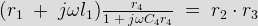
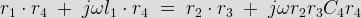
Let us separate the real and imaginary parts, the we have,
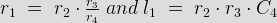
Now the quality factor is given by,
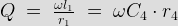
Advantages of Maxwell's Bridge
(1) The frequency does not appear in the final expression of both equations, hence it is independent of frequency.
(2) Maxwell's inductor capacitance bridge is very useful for the wide range of measurement of inductor at audio frequencies.
Disadvantages of Maxwell's Bridge
(1) The variable standard capacitor is very expensive.
(2) The bridge is limited to measurement of low quality coils (1 < Q < 10) and it is also unsuitable for low value of Q (i.e. Q < 1) from this we conclude that a Maxwell bridge is used suitable only for medium Q coils.
The above all limitations are overcome by the modified bridge which is known as Hey's bridge which does not use an electrical resistance in parallel with the capacitor.
 by
by